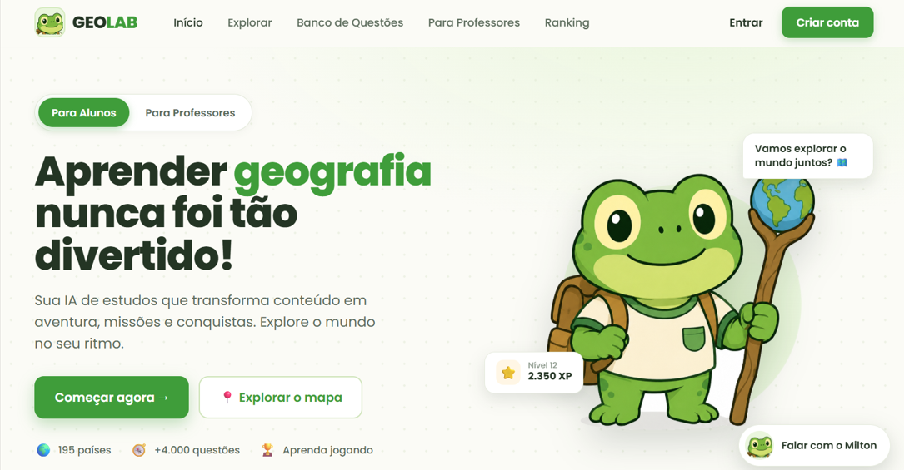
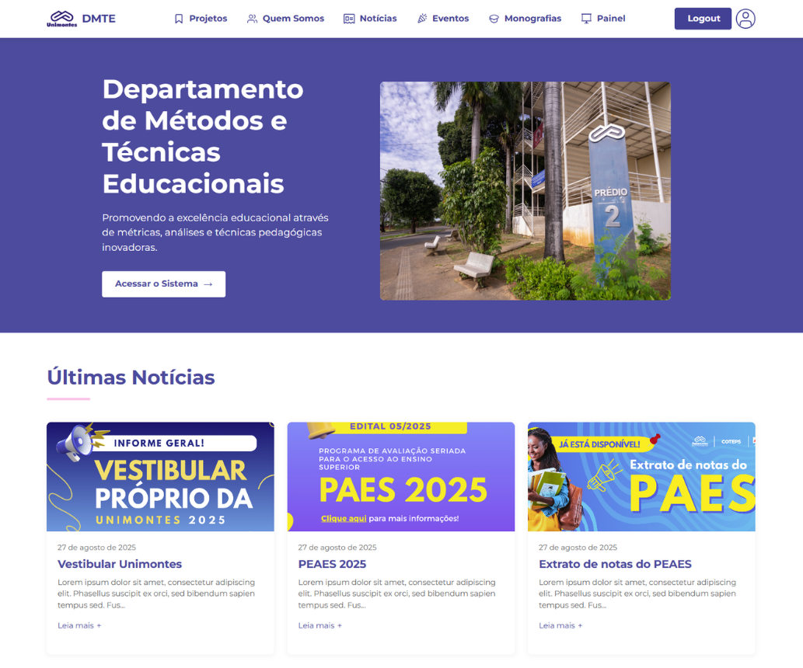
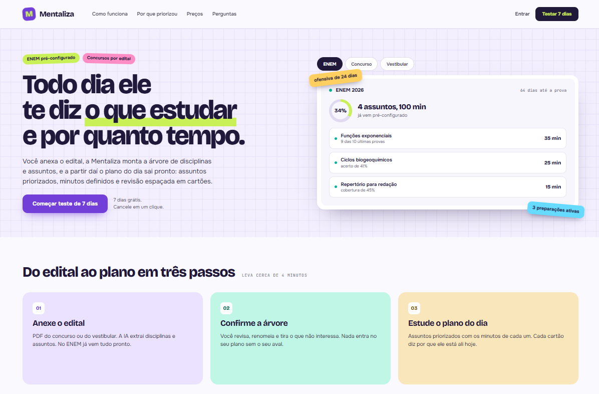
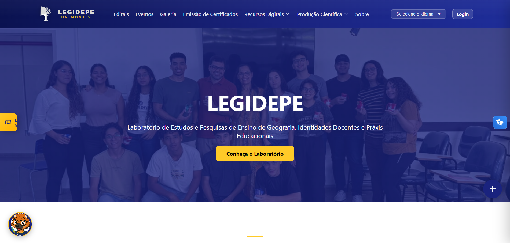

Já construí sistema pra fintech de crédito, pra laboratório de pesquisa e pra uma empresa em Londres :DI have built systems for a credit fintech, a research lab and a company in London :D
aberta a freelances e vagasopen to freelance & full-time
01
Sobre mimAbout me
✦
Mineira, apaixonada por tecnologia, design e um bom cafézinho. Comecei mexendo em blogs no velho PHP e nunca mais saí do editor de código.
De lá pra cá a lista ficou variada: uma fintech de crédito consignado, um laboratório de pesquisa da UNIMONTES e uma empresa de serviços em Londres. Em todas elas o trabalho foi o mesmo: entender o processo manual que ninguém aguentava mais e transformar em sistema.
Gosto da parte chata: arquitetura em camadas, permissões que realmente protegem, banco modelado direito. É o que faz o resto parar de pegar fogo.
Fora do código, me perco na cozinha, em jogos indie, playlists da Taylor Swift e meus esboços.
Born and raised in Minas Gerais, in love with technology, design and a good cup of coffee. I started out tinkering with blogs in good old PHP and never left the code editor.
Since then the list has gotten varied: a payroll-credit fintech, a research lab at UNIMONTES and a services company in London. The job was the same everywhere: find the manual process nobody could stand any more and turn it into a system.
I like the boring part: layered architecture, permissions that actually protect, a database modelled properly. That is what keeps everything else from catching fire.
Away from code, I get lost in the kitchen, in indie games, Taylor Swift playlists and my sketchbooks.
02
Skills
✧
o que eu abro todo diawhat I open every single day
Frontend
✦ React
✦ Next.js (App Router)
✦ TypeScript
✦ Tailwind CSS
✦ shadcn/ui
✦ HTML5 / CSS3
Backend & dadosBackend & data
✦ Node.js
✦ Express
✦ APIs REST
✦ PostgreSQL
✦ MySQL
✦ Prisma
ArquiteturaArchitecture
✦ BFF Pattern
✦ Server Components / SSR
✦ Autenticação por sessãoSession auth
✦ Controle de permissõesPermission control
✦ Cache e tipagem estritaCaching & strict typing
FerramentasTools
✦ Git / GitHub / GitLab
✦ Figma
✦ Linux (Fedora)
✦ CI/CD
✦ Scrum · Kanban
✦ Code Review
também trabalhei comalso worked with PHP · Laravel · Leaflet · Puppeteer · Vite
03
ExperiênciaExperience
✦
✦
CadeConsig
jan/2026 a jun/2026
Desenvolvedora Full Stack · fintech de crédito consignadoFull Stack Developer · payroll-credit fintech
✧ Módulos estratégicos da plataforma em Next.js 15, TypeScript, Tailwind v4 e shadcn/ui, seguindo arquitetura de 6 camadas (Server Components, BFF, Services, Hooks e Componentes de Renderização).Strategic platform modules in Next.js 15, TypeScript, Tailwind v4 and shadcn/ui, following a six-layer architecture (Server Components, BFF, Services, Hooks and Rendering Components).
✧ Sistema completo de permissões por roles, com controle granular de rotas, sidebar dinâmica e proteção em múltiplas camadas para dados sensíveis de instituições financeiras.Full role-based permission system, with granular route control, dynamic sidebar and multi-layer protection for sensitive financial data.
✧ Módulos de Gestão de Consultas e Telemarketing construídos do zero, com integração a APIs REST e tratamento completo de estados assíncronos.Query Management and Telemarketing modules built from scratch, with REST API integration and complete async state handling.
✧ Correção de bugs críticos de arquitetura, como overflow de cookies de sessão por arrays extensos de permissões e falhas no fluxo pós-login.Fixes for critical architectural bugs, such as session-cookie overflow from large permission arrays and post-login flow failures.
Desenvolvedora Full Stack · Londres, Reino Unido (remoto)Full Stack Developer · London, UK (remote)
✧ Criação e manutenção da plataforma corporativa da empresa, especializada em limpeza profissional para hotéis e imobiliárias no mercado britânico.Built and maintained the company's corporate platform, serving professional cleaning for hotels and estate agencies in the UK market.
✧ Sistema automatizado de agendamento "Book Now", gestão de reservas, comunicação com clientes corporativos e controle de escalas de funcionários.Automated "Book Now" scheduling, booking management, corporate client communication and staff shift control.
✧ Substituição da captação manual de clientes por um fluxo digital de ponta a ponta.Replaced manual client intake with an end-to-end digital flow.
✧ Responsável pela arquitetura técnica, desenvolvimento, testes e manutenção contínua.Responsible for technical architecture, development, testing and ongoing maintenance.
Desenvolvedora Full Stack · Iniciação CientíficaFull Stack Developer · Research Fellowship
✧ Portal institucional do laboratório, usado por pesquisadores, bolsistas e estagiários, com deploy contínuo.The lab's institutional portal, used by researchers, fellows and interns, with continuous deployment.
✧ Banco PostgreSQL com soft delete, log de auditoria e integridade referencial.PostgreSQL database with soft delete, audit logging and referential integrity.
✧ Módulo de estágio com as quatro fichas oficiais da UNIMONTES, geração automatizada de certificados em PDF e verificação de autenticidade.Internship module with UNIMONTES' four official forms, automated PDF certificate generation and authenticity checks.
✧ Liderança técnica do GeoLab, em desenvolvimento, incluindo o Atlas geográfico interativo como serviço independente.Technical lead on GeoLab and release of the interactive geographic Atlas as a standalone service.
Bolsista de Iniciação Científica · FrontendResearch Fellow · Frontend
✧ Desenvolvimento frontend das interfaces do laboratório, com foco em usabilidade e acessibilidade para alunos e professores.Frontend development of the lab's interfaces, focused on usability and accessibility for students and teachers.
✧ Um ano de bolsa presencial, em Montes Claros, trabalhando junto de pesquisadores e bolsistas.A full year on site in Montes Claros, working alongside researchers and fellows.
React · TypeScript · HTML5 · CSS3
coisas que eu construí de ponta a ponta ✧ geolab ✧ dmte ✧ legidepe ✧ gamecheck ✧ poddev ✧ mentaliza ✧ coisas que eu construí de ponta a ponta ✧ geolab ✧ dmte ✧ legidepe ✧ gamecheck ✧ poddev ✧ mentaliza ✧ things I built end to end ✧ geolab ✧ dmte ✧ legidepe ✧ gamecheck ✧ poddev ✧ mentaliza ✧ things I built end to end ✧ geolab ✧ dmte ✧ legidepe ✧ gamecheck ✧ poddev ✧ mentaliza ✧
04
ProjetosProjects
✧
seis coisas que saíram do papelsix things that made it out of the sketchbook
em desenvolvimento · liderança técnicain progress · technical lead

GeoLab
Plataforma educacional de Geografia com interfaces distintas para professores e alunos: banco de questões, missões, ranking e trilhas de estudo. Definiu a arquitetura de referência dos próximos projetos do laboratório.A geography learning platform with separate teacher and student interfaces: question bank, missions, ranking and study tracks. It set the reference architecture for the lab's next projects.
✧ Atlas geográfico interativo já funcionando como serviço independenteInteractive geographic Atlas already running as a standalone service
✧ Arquitetura full stack e modelagem de dados definidas por mimFull stack architecture and data modelling defined by me
Plataforma institucional do Departamento de Métodos e Técnicas Educacionais da UNIMONTES: projetos, notícias, eventos e gestão de monografias. Liderei o desenvolvimento, da arquitetura à implantação.Institutional platform for UNIMONTES' Department of Educational Methods and Techniques: projects, news, events and thesis management. I led development, from architecture to rollout.
500+
usuários ativosactive users
-90%
tempo em processos manuaistime on manual processes
apresentado no III Congresso Internacional de Educação e Inovação da Unimontespresented at Unimontes' III International Congress of Education and Innovation

produto próprio · em desenvolvimentoown product · in progress

Mentaliza
Você anexa o edital e ela responde a única pergunta que importa: o que estudar hoje e por quanto tempo. A IA lê o PDF, monta a árvore de disciplinas, prioriza o que mais cai e devolve o plano do dia com revisão espaçada em cartões.You upload the syllabus and it answers the only question that matters: what to study today and for how long. The AI reads the PDF, builds the subject tree, prioritises what shows up most and hands back the day's plan with spaced-repetition cards.
Next.js · TypeScript · PostgreSQL
projeto meu, em desenvolvimento, aceito cobaiasmy own project, still in the works, testers welcome

Portal LEGIDEPE
Portal do laboratório de pesquisa: editais, eventos, produção científica e emissão de certificados verificáveis.The research lab's portal: calls, events, scientific output and verifiable certificate issuing.
Plataforma de avaliação de jogos: notas em estrelas, listas personalizadas, busca avançada e contas de usuário.A game review platform: star ratings, custom lists, advanced search and user accounts.
Sistema web para gerenciamento de podcast: organização por categorias e tags, busca e páginas individuais de episódios.A podcast management system: organisation by categories and tags, search and individual episode pages.